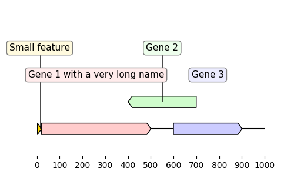
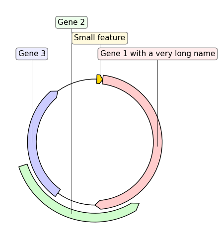

Define a graphic record “by hand”¶
"""Simple example where a few features are defined "by hand".
The features are then displayed and exported as PNG, first with a linear view,
then with a circular view.
"""
from dna_features_viewer import (GraphicFeature, GraphicRecord,
CircularGraphicRecord)
features=[
GraphicFeature(start=5, end=20, strand=+1, color="#ffd700",
label="Small feature"),
GraphicFeature(start=20, end=500, strand=+1, color="#ffcccc",
label="Gene 1 with a very long name"),
GraphicFeature(start=400, end=700, strand=-1, color="#cffccc",
label="Gene 2"),
GraphicFeature(start=600, end=900, strand=+1, color="#ccccff",
label="Gene 3"),
]
# PLOT AND EXPORT A LINEAR VIEW OF THE CONSTRUCT
record = GraphicRecord(sequence_length=1000, features=features)
ax, _ = record.plot(figure_width=5)
ax.figure.savefig("by_hand.png")
# PLOT AND EXPORT A CIRCULAR VIEW OF THE CONSTRUCT
circular_rec = CircularGraphicRecord(sequence_length=1000, features=features)
ax2, _ = circular_rec.plot(figure_width=4)
ax2.figure.tight_layout()
ax2.figure.savefig("by_hand_circular.png", bbox_inches="tight")

